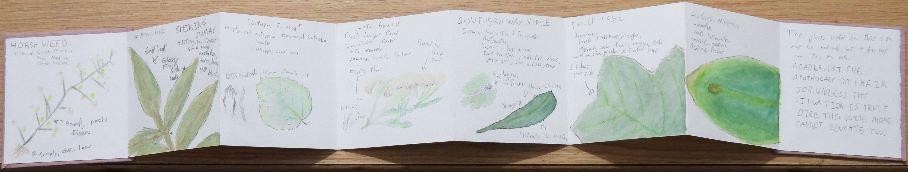
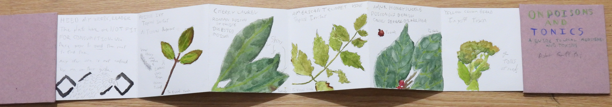

Plant Book
 This book was created for an assignment where I had to observe the natural world. I took to this in a route most fitting for understanding not just what lived in a place, but how that place impacted humans. Obviously, plants take space, so they overlap with humans. Less clearly, however, are the uses and dangers posed by local flora. This book seeks to address that, using various sources including my parents and the internet to inform the uses and threats posed by plants.
Some flourish was added to achieve the feel I wanted, and such a book should be made with caution. Nature is not to be feared, but respected, and that holds true with the toxic plants I found. They were handled with nitrile gloves and zip-loc bags for safety. Such was easier than treating each species differently.
This work was fun, and an enjoyable activity. It is a perfect time to practice your leaf-green mixing, and discovering what pigments are actually in a leaf. We can see that leaves are green, and we know they turn red and yellow in the fall, but there are caveats. Plants use 2 pigments for photosynthesis, and the red/yellow pigments are always present. In my experience, my best greens were mixes of a light and dark green, a red, and a yellow. Even without thinking about it, my process to represent plants represented the processes happening within the plant. Consider that as you work on such a book.
Panorama Book
Take photos of book
I chose a place near and dear to me for this assignment. On my walk from class to food, I always take a path that takes me between a pond and a marsh. In that marsh stands a tall pine tree, that a local Great Blue Heron roosts in with varying frequency. The prompt here was a 180 degree view of a location of my choosing. Consider how, when given such impersonal prompts to do, you can add in that personal touch to give you a reason to do it.
It seems obvious, but I garantee that you don't do it as much as you could if you aren't conciously thinking about it, and in my experience, it makes the process that much better. And one of the places you should strive to make personal is your local environment. Look around some time, and see if there are any areas that have just a bit more going on over time than is visible at any given moment.
Bird Book
Take photos of book
Now, I may be biased here, but one of the easiest ways to care about an environment is to care about the birds. Each bird I did here was from a photo I took myself, and I am proud of it. Birds are a pain to draw, especially if you don't understand the structures at play. But, consider learning those forms. You can work from photos taken by others, but just try to, across mediums and species, represent these wonderful dinosaurs.
Now, take a break, look around. Not in your studio or around you desk, but outside. Can you spot any species that were in your works? Can you see what they are up do? Try just doodling or sketching these moving birds. I didn't do that in this book as it didn't fit the assignment instructions, but consider doing it, and see if you can start taking that perspective to the world around of you without a sketchbook and pencil in hand.
And don't feel afraid to make "bad" art. If you think it looks bad, that means your eyes are ahead of you hands. And the only way to fix that is to practice. Luckily, while learn to see the world, you can learn to represent it too, in any medium of your choice.
Do more works to add
The whole science communication thing is pretty fresh. It ain't class but maybe link to this?